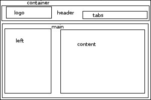

Welcome to Rose of Sharon
News blurbDid you know that roses are mostly edible? Rose hips (the part of the flower left after all the petals fall off) contain more vitamin C than almost all fruits & veggies see the photos |
News blurbRoses are believed to be native flowers of the United States -- archeologists have found fossilized flowers over 35 million years old in the U.S. see the photos learn more about flowers |
Welcome to my site
| th | th | th | th |
|---|---|---|---|
| cell | cell | cell | cell |
| cell | cell | cell | cell |
| cell | cell | cell | cell |
| cell | cell | cell | cell |
Demonstration of Styles
Demonstration of Styles
Indented paragraphs -- by default, paragraphs are indented.
Book style paragraphs -- I put this in most of my designs, it's mostly just for fun but someone might find it useful so I put it in there.
Be sure to check out the Alternate View
The image below shows how the template is constructed:
